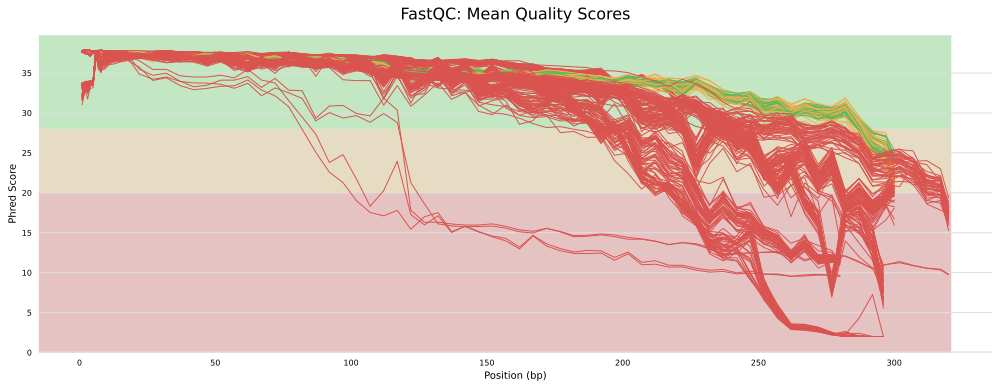
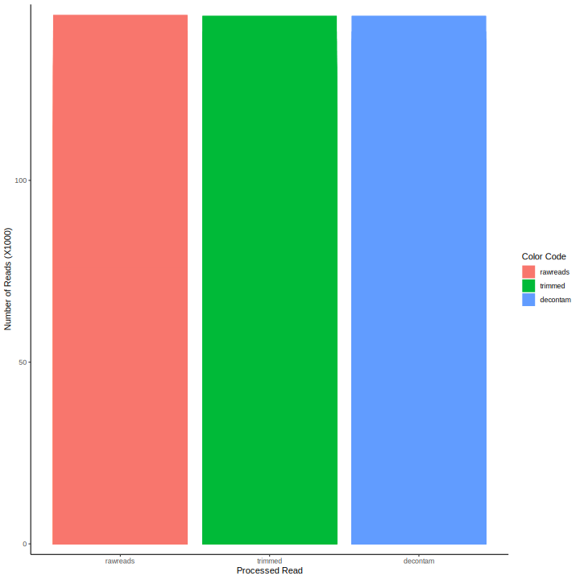

3 Start Read Quality Control
- Assuming that most QC tools are ready, it is time to use them to do the following:
- Check the quality of the reads using
fastqc. - Create a summary report of quality metrics using
multiqc. - Trim poor read at a user-specified cutoff using
bbduk.sh. - Remove contaminants
bbduk.sh.
- Check the quality of the reads using
3.1 QC on raw reads
#!/bin/bash
echo PROGRESS: FastQC - Getting quality scores of raw reads.
INPUTDIR="resources/reads"
FASTQC="results/qc/fastqc1"
mkdir -p "${FASTQC}"
fastqc "${INPUTDIR}"/*.fastq.gz -o "${FASTQC}"#!/bin/bash
echo PROGRESS: Getting stats of the raw reads.
INPUTDIR="resources/reads"
SEQKIT="results/qc/seqkit1"
mkdir -p "${SEQKIT}"
seqkit stat "${INPUTDIR}"/*.fastq.gz >"${SEQKIT}"/seqkit_stats.txt
3.2 QC after trimming poor reads


3.4 View processed read status
source("workflow/scripts/common.R")
library(tidyverse, suppressPackageStartupMessages())
library(ggtext)
stats1 <- read_table("results/qc/seqkit1/seqkit_stats.txt", show_col_types = F) %>%
mutate(file = str_replace_all(file, ".*/", "")) %>%
mutate(file = str_replace_all(file, ".fastq.gz", "")) %>%
select(file, rawreads = num_seqs)
stats2 <- read_table("results/qc/seqkit2/seqkit_stats.txt", show_col_types = F) %>%
mutate(file = str_replace_all(file, ".*/", "")) %>%
mutate(file = str_replace_all(file, ".fastq.gz", "")) %>%
select(file, trimmed = num_seqs)
stats3 <- read_table("results/qc/seqkit3/seqkit_stats.txt", show_col_types = F) %>%
mutate(file = str_replace_all(file, ".*/", "")) %>%
mutate(file = str_replace_all(file, ".fastq.gz", "")) %>%
select(file, decontam = num_seqs)
stats <- inner_join(stats1, stats2, by = "file") %>%
inner_join(., stats3, by = "file") %>%
pivot_longer(-file, names_to = "variable", values_to = "count") %>%
mutate(variable = factor(variable,
levels = c("rawreads", "trimmed", "decontam")))
stats %>%
ggplot(aes(x = fct_inorder(file), y = count/1E3, fill = variable)) +
theme_cdi() +
geom_col(position = "dodge") +
labs(x = "Sample", y = "Number of Reads (X1000)", fill = "Color Code") +
scale_y_continuous(expand = c(0.02, 0.0))
ggsave(file="images/samples_hist.png", width=10, height=10)
ggsave(file="images/samples_hist.svg", width=10, height=10)
stats %>%
ggplot(aes(x = fct_inorder(variable), y = count/1E3, fill = variable)) +
theme_classic() +
geom_col(position = "dodge") +
labs(x = "Processed Read", y = "Number of Reads (X1000)", fill = "Color Code") +
scale_y_continuous(expand = c(0.02, 0.0))
ggsave(file="images/qc_hist.png", width=10, height=10)
ggsave(file="images/qc_hist.svg", width=10, height=10)